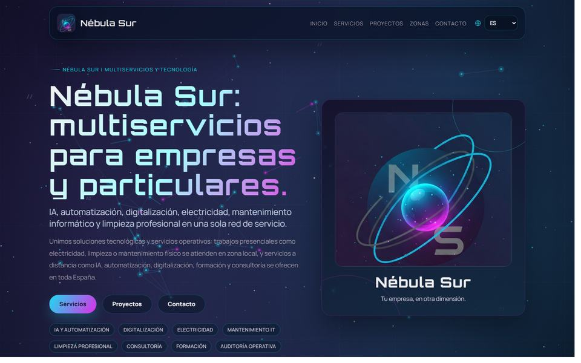
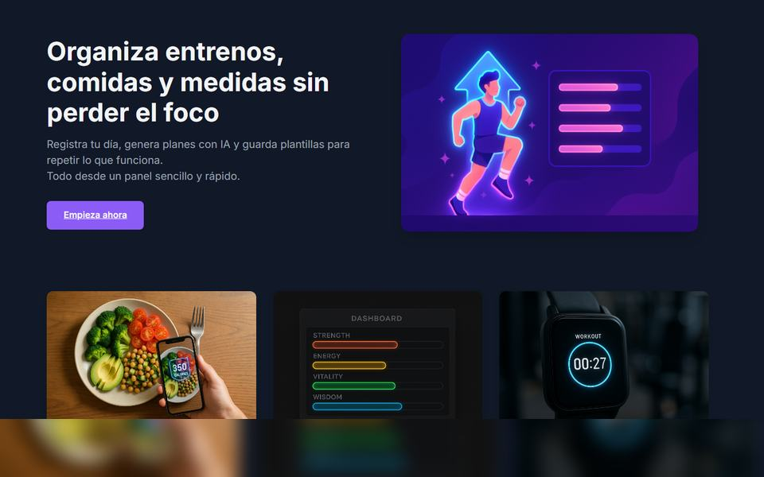

Desarrollador fullstack · Profesor de IA · Visión artificial
Desarrollador fullstack y profesor de IA aplicada.
Construyo aplicaciones modernas y enseño programación, inteligencia artificial y Big Data. Combino backend, frontend, automatización y análisis de imagen para crear soluciones claras, rápidas y fáciles de mantener.
Desarrollador fullstack, profesor y especialista en IA aplicada
Perfil
Software, IA y formación técnica con mirada de producto.
Mi perfil une desarrollo fullstack y docencia técnica. Trabajo en sistemas empresariales, plataformas web, automatización, visión artificial y formación, aportando claridad cuando hay que explicar, construir y mejorar a la vez.
Sistemas robustos
Java, Spring Boot, MyBatis, Hibernate, PL/SQL y bases de datos relacionales para entornos críticos, integraciones y procesos de facturación.
Modelos que resuelven
Integración de GPT, LLaMA y Gemini, proyectos con Python, TensorFlow, PyTorch, Scikit-learn y prácticas de visión por computador con OpenCV.
Enseñar para construir mejor
Creación de temarios, ejercicios y proyectos de programación, IA y Big Data para FP, academias, alumnado joven y perfiles técnicos en crecimiento.
Stack técnico
Tecnologías para construir, automatizar y enseñar con solvencia.
Backend y datos
Frontend y producto
IA, visión y DevOps
Experiencia
Trayectoria conectando software, IA, educación y sistemas reales.
Técnico de visión artificial · Deuser, Indra Group
Desarrollo de soluciones de software y visión artificial para proyectos industriales y ERP, integrando tecnologías modernas, automatización y soporte técnico especializado.
Profesor de IA y Big Data · IFP / Code Space
Diseño e impartición de contenidos de programación en inteligencia artificial con Python, Scikit-learn, TensorFlow, GPT, visión por computador y prácticas aplicadas.
Fullstack Developer · Neotalent para Grupo Piñero
Desarrollo de sistemas de facturación con Java y PL/SQL, migración de proyectos a Java 21 y automatización de pruebas con Python.
Fullstack Developer · NTT Data y Sipadan
Migraciones a Spring Boot, aplicaciones empresariales con JavaFX y MySQL, plataformas e-learning, CRM en Angular y asistentes IA para soporte técnico.
Analista programador · Ayesa
Integraciones críticas en sistemas TPV-PC para Redsys LATAM, trabajando con dispositivos físicos, PIN Pads, terminales de pago y protocolos EMV.
Proyectos propios
Dos productos reales, publicados y enfocados a utilidad inmediata.

Servicios, automatización e IA
Nébula Sur
Web corporativa para servicios locales y consultoría online en España: IA aplicada, automatización, digitalización, formación, electricidad, limpieza y mantenimiento informático.
Abrir proyecto
Entrenamiento, nutrición e IA
Gym Tracker
Aplicación fullstack para registrar entrenos, comidas, medidas y progreso. Genera planes con IA, guarda plantillas reutilizables y exporta informes PDF por intervalo.
Abrir proyectoContacto
¿Tienes un sistema que modernizar, una idea que lanzar o un equipo que formar?
Escríbeme y vemos cómo convertirlo en una solución clara, rápida y sostenible.